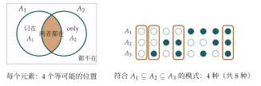

STEP III 2019，第 12 题
继续之前，请先阅读题目（原题为英文）。题目载于 OCR 提供下载的 2019 年 STEP 试卷（zip 文件）内的 STEP III 试卷： www.ocr.org.uk/Images/696590-2019-past-papers.zip
引子
完全随机地选出 \(\{1, 2, \ldots, 100\}\) 的两个子集（subset）。它们没有任何共同元素的可能性有多大？直觉也许会告诉你：“相当大：大多数成对的集合都不相同”。事实上，这个概率是 \(\bigl(\frac34\bigr)^{100}\)，约为 \(3 \times 10^{-13}\)。随机集合很大（大约占全部元素的一半），所以它们几乎总会重叠。
这道题很短，当中唯一的想法却很有威力：不要把集合当作整体来想，而要每次只想一个元素。一个随机子集不过是 \(n\) 次独立（independent）的掷硬币，每个元素掷一次；于是，凡是关于随机子集的问题，都变成关于这些掷硬币结果的问题。
动笔之前
怎样用 \(n\) 条是非题的一串答案，来描述 \(\{1, \ldots, n\}\) 的一个子集？
对每个元素 \(i\)，回答“\(i\) 在集合里吗？”这条问题。子集决定了答案，答案也决定了子集。每个元素有 \(2\) 个选择，所以一共有 \(2^n\) 个子集。均匀随机（uniformly at random）地选一个子集，就等于独立地掷一枚公平硬币来回答每条问题。
逐步解题
阶段 1 一个元素
按照掷硬币的描述，\(\mathrm{P}(1 \in A_1) = \frac12\)。事实上，\(2^n\) 个子集中恰好有一半包含 \(1\)：把每个不包含 \(1\) 的子集，与加入 \(1\) 之后所得的子集配成一对即可。
阶段 2 不相交的集合
要使 \(A_1 \cap A_2 = \varnothing\)，每个元素 \(i\) 必须满足甚么条件？就单一个元素而言，这件事的概率是多少？为甚么可以把各个元素的概率相乘？
\(A_1\) 与 \(A_2\) 不相交（disjoint），当且仅当没有元素同时属于两者。对单一个元素 \(i\) 来说，有四种等可能的情况：两个集合都不在、只在 \(A_1\)、只在 \(A_2\)、两个都在（图 9.12.1 左）。只有最后一种是禁止的，所以 \(i\) 不同时属于两者的概率是 \(\frac34\)。不同的元素由不同而且独立的掷硬币结果决定，所以 \[\mathrm{P}(A_1 \cap A_2 = \varnothing) = \Bigl(\frac34\Bigr)^n. \qed\] 对三个集合而言，元素 \(i\) 同时属于三者的概率是 \(\frac18\)，所以 \(\mathrm{P}(A_1 \cap A_2 \cap A_3 = \varnothing) = \bigl(\frac78\bigr)^n\)。一般而言， \[\mathrm{P}(A_1 \cap \cdots \cap A_m = \varnothing) = \Bigl(1 - \frac{1}{2^m}\Bigr)^n. \qed\]
阶段 3 子集
要使 \(A_1 \subseteq A_2\)，一个元素的四种情况之中，哪一种是禁止的？
\(A_1 \subseteq A_2\) 不成立，当且仅当有某个元素在 \(A_1\) 里而不在 \(A_2\) 里。同样是四种模式中有一种被禁止，所以 \[\mathrm{P}(A_1 \subseteq A_2) = \Bigl(\frac34\Bigr)^n,\] 与不相交的情况相同。这并非巧合：\(A_1 \subseteq A_2\) 当且仅当 \(A_1\) 与 \(A_2\) 的补集（complement）不相交，而随机集合的补集也是一个随机集合。
要使 \(A_1 \subseteq A_2 \subseteq A_3\)，一个元素的 \(8\) 种归属模式（在或不在每个集合里）之中，哪些是容许的？
沿着 \(A_1, A_2, A_3\) 这条链（chain）走，一个元素一旦进入，就必须一直留在里面。所以容许的模式是“不在、不在、不在”、“不在、不在、在”、“不在、在、在”和“在、在、在”：\(8\) 种之中的 \(4\) 种（图 9.12.1 右）。因此 \(\mathrm{P}(A_1 \subseteq A_2 \subseteq A_3) = \bigl(\frac48\bigr)^n = \bigl(\frac12\bigr)^n\)。
对于由 \(m\) 个集合组成的链，一个容许的模式取决于该元素最先进入哪一个集合（\(A_1, \ldots, A_m\) 其中之一，或者从不进入），所以 \(2^m\) 种模式之中有 \(m + 1\) 种是容许的： \[\mathrm{P}(A_1 \subseteq A_2 \subseteq \cdots \subseteq A_m) = \Bigl(\frac{m + 1}{2^m}\Bigr)^n. \qed\]

回顾
按元素分解。每个集合层面的条件（不相交、子集、链），都是分别加在每个元素上的条件。
元素之间互相独立。由于各个元素由独立的掷硬币结果决定，概率可以相乘。
数算模式。每个答案都是（容许的模式数 \(\div\) 全部模式数）\(^n\)。
背后的数学
不用概率的计数
把每个概率乘以选择的总数，就得到一个计数。满足 \(A_1 \subseteq A_2\) 的有序对 \((A_1, A_2)\) 的数目是 \(4^n \times \bigl(\frac34\bigr)^n = 3^n\)。你也可以直接数算这些有序对：先选定 \(A_2\) 的大小 \(k\)，然后以 \(\binom nk\) 种方法选出 \(A_2\) 本身，再从它的 \(2^k\) 个子集中任选一个作为 \(A_1\)。所以 \[\sum_{k=0}^{n}\binom{n}{k}2^k = 3^n,\] 这正是 \((1 + 2)^n\) 的二项式定理（binomial theorem）。用两种方法数算同一样东西，一次按元素、一次按大小，便证明了一条恒等式：这就是算两次（double counting）的方法，你在 第 7.9 节 讨论柏拉图立体时已经见过。同样地，链 \(A_1 \subseteq \cdots \subseteq A_m\) 的数目是 \((m + 1)^n\)。
子集的格
\(\{1, \ldots, n\}\) 的所有子集按包含关系排序，形成一个称为布尔格（Boolean lattice）的结构，可以把它想像成一个 \(n\) 维立方体：每个子集是一个顶点，以它那一串是非题的答案作标记，而沿着一条棱移动，就是加入或移走一个元素。链就是向上走的路径。有些深刻的结果描述了在给定条件下，子集族可以有多大。施佩纳定理（Sperner’s theorem，1928 年）指出，在没有一个集合包含另一个集合的子集族之中，最大的一族有 \(\binom{n}{\lfloor n/2\rfloor}\) 个集合；艾狄胥–柯–拉多定理（Erdős–Ko–Rado theorem，1961 年）则说明，最多可以选出多少个 \(k\) 元集合，使得任意两个都有共同元素。两者都是组合数学（combinatorics）入门课程的标准内容，而把子集看成掷硬币的观点，给出了其中一些最漂亮的证明。
布尔（George Boole）的 The Laws of Thought（《思维规律》，1854 年）把逻辑命题当作集合，把“与”、“或”、“非”当作交集、并集和补集。把一个集合编码成一串是非题的答案，正是电脑表示集合的方法：\(\{1, \ldots, 64\}\) 的一个子集就是单独一个 \(64\) 位元的数，而交集就是“逐位元 AND”（bitwise AND）指令。本题的方法，即每次只看一个元素（一个位元），正是分析这类运算的方法。
思维技巧
当对象是由每个元素各自的独立选择构成时，一个分别加在每个元素上的条件，其概率等于一个乘积。
这个方法把一个关于 \(2^n\) 个子集的问题，变成一个关于 \(4\) 种或 \(8\) 种模式的问题。到了大学，它会在组合数学（集合与多重集的生成函数（generating functions））、概率论（独立的坐标）和计算机科学（逐位元的推理）中再次出现。
延伸练习
覆盖。求 \(\mathrm{P}(A_1 \cup A_2 = S)\) 和 \(\mathrm{P}(A_1 \cup A_2 \cup \cdots \cup A_m = S)\)。
大小相同。证明 \(\mathrm{P}(|A_1| = |A_2|) = \binom{2n}{n}\big/4^n\)。（提示：\(|A_1| = |A_2|\) 当且仅当 \(|A_1| + |S \setminus A_2| = n\)。）证明当 \(n\) 很大时，这个概率约为 \(1/\sqrt{\pi n}\)。
分成三份。证明 \(S\) 的不相交子集所组成的有序对 \((A, B)\) 的数目是 \(3^n\)，并求由不相交子集所组成的无序对 \(\{A, B\}\) 的数目。
小 \(n\) 的施佩纳定理。对 \(n = 3\) 和 \(n = 4\)，求 \(\{1, \ldots, n\}\) 的子集族中，没有一个集合包含另一个集合的最大一族。
延伸阅读
Miklós Bóna, A Walk Through Combinatorics（World Scientific），其中关于子集和偏序集（partially ordered sets）的章节。
Béla Bollobás, Combinatorics: Set Systems, Hypergraphs, Families of Vectors and Combinatorial Probability（Cambridge University Press）。一本简短而优雅的书，讲述子集族，由施佩纳定理说起。
Peter Cameron, Combinatorics: Topics, Techniques, Algorithms（Cambridge University Press）。一门入门课程，特别着重用两种方法计数。